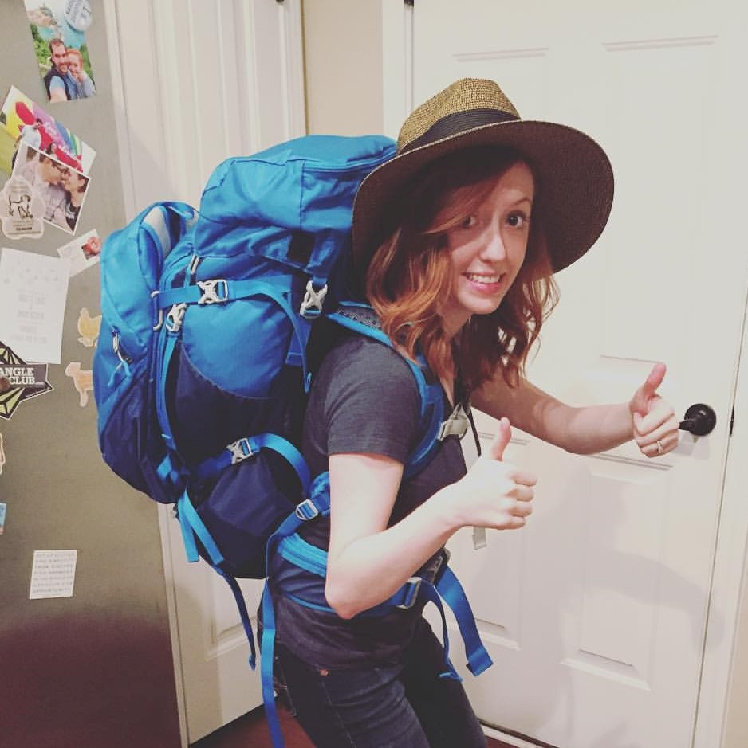

About Me
NC born and bred, I have been a Tar Heel my entire life. I graduated from UNC-Chapel Hill in 2011 with a dual degree in communication studies (with a focus in Speech and Hearing Sciences) and Linguistics. I received a Master's degree from ECU in 2013 in Communication Sciences and Disorders.
I completed a clinical fellowship year in Speech Pathology at Rex Hospital and have since been working as a speech pathologist at Duke University Hospital. I work primarily with adults in the Cardiothoracic Surgical unit. My favorite patients to work with are those that have just had a lung transplant. My primary responsibilites are helping these patients return to eating, drinking, and talking after surgery.
In my free time, I enjoy cooking and hosting dinner parties. I also enjoy reading, particuarly historical fiction. I have been married for three years and have two friendly cats,Charlie and Valentine. My husband and I are avid travelers--in 2017 we visited five different countries and spent time in Cape Cod and Los Angeles. My favorite things are college basketball, Chianti, and fresh french fries.
Connect with me